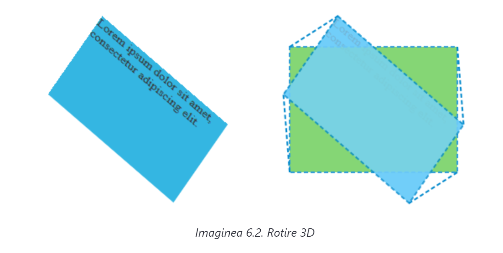
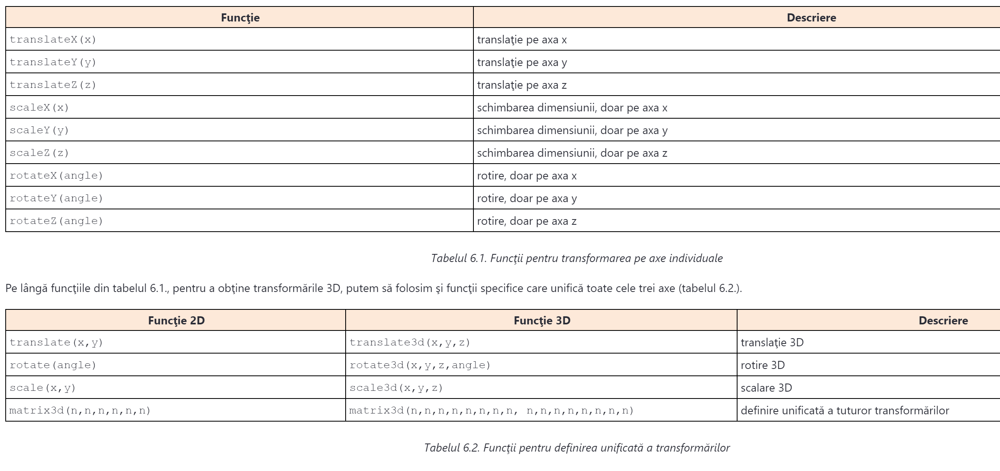

Utilizând CSS-ul se pot efectua trei tipuri de transformări diferite în sistemul de coordonate tridimensional, şi anume:
Transformările 3D funcţionează similar cu transformările 2D prezentate în lecţia anterioară. Aceasta înseamnă că şi pentru definirea lor folosim proprietatea transform. Totuşi, funcţiile CSS, care se setează pentru valoarea acestei proprietăţi, sunt diferite. De exemplu, în lecţia anterioară am folosit funcţia CSS cu numele rotate() care a rotit elementul în sistemul de coordonate 2D. Obţinerea rotirii în sistemul de coordonate 3D se poate efectua în felul următor:
#transformed {
transform: rotateX(30deg) rotateY(30deg) rotateZ(30deg);
}
Exemplul ilustrează folosirea funcţiilor rotateX(), rotateY() şi rotateZ() precum şi valorile proprietăţii transform.
Exemplul prezentat produce un efect identic cu cel din imaginea 6.2.
Un efect identic se poate obţine şi în felul următor, prin unificarea definirii rotirii pe toate axele, prin folosirea unei funcţii CSS speciale, destinate transformărilor 3D:
transform: rotate3d(1,1,1, 30deg);
De această dată am folosit funcţia rotate3d(). Primii trei parametri se referă la axele în jurul cărora se va efectua rotirea. Numărul 1 ne arată că va avea loc rotirea, iar 0 că nu va exista nicio rotire. În general, primii trei parametri se referă la axele x,y şi z. Ultimul parametru defineşte unghiul de rotaţie.
Din exemplele prezentate vedem că funcţiile CSS pentru obţinerea transformărilor 3D sunt diferite. Acestea se pot împărţi în două grupuri - în funcţii care efectuează transformările pe axe individuale (tabelul 6.1.) şi în funcţii care asigură definirea unificată a transformărilor pe mai multe axe (tabelul 6.2.).
